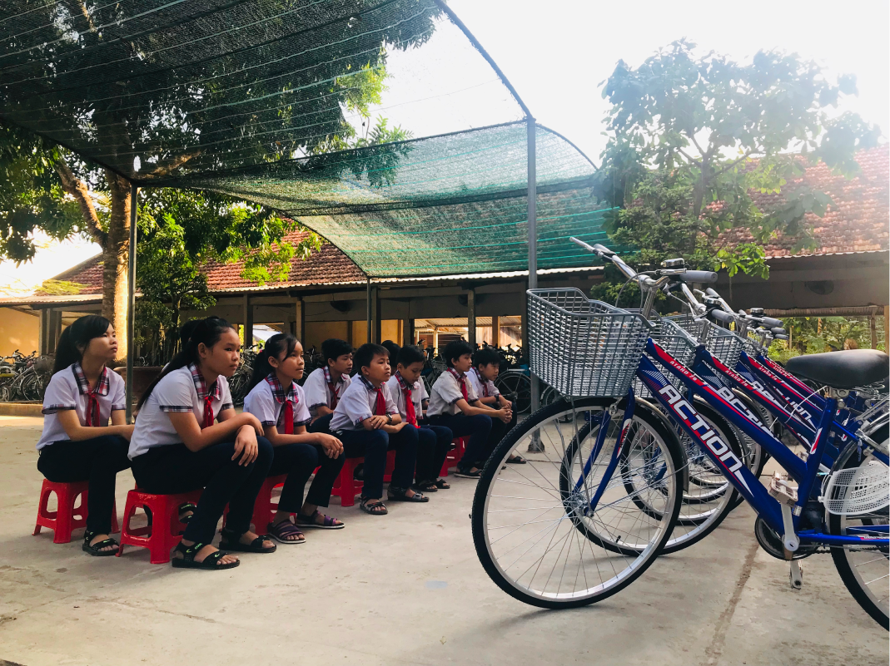
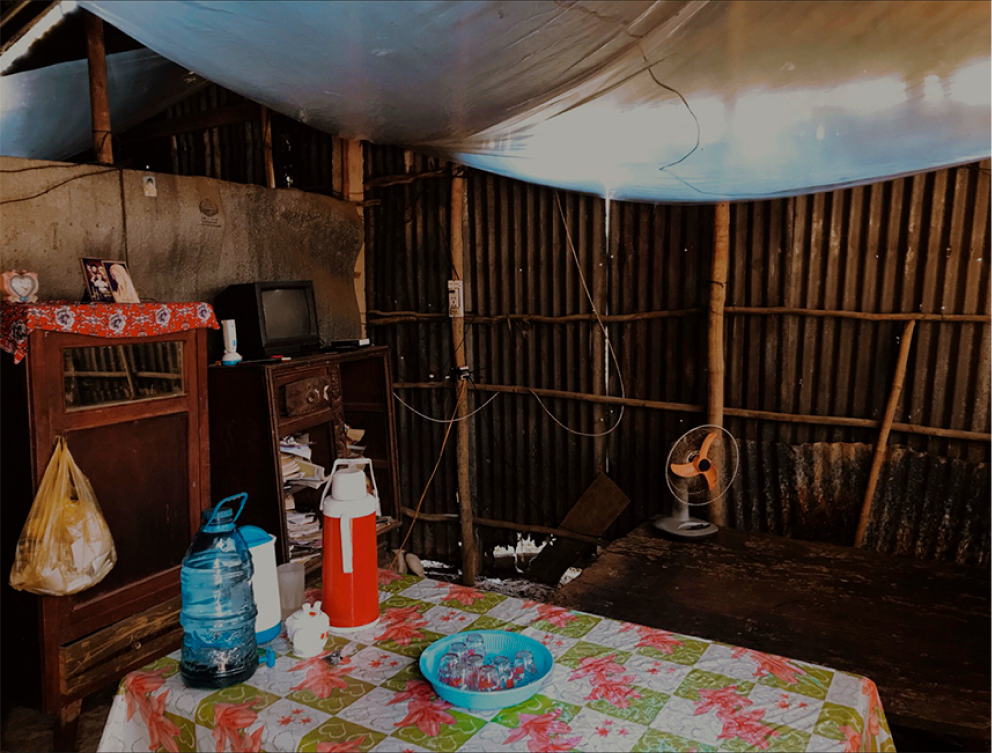

We support bright students because knowledge is power.
Education
Education is at the cornerstone of breaking the cycle of poverty; it's a powerful tool that empowers individuals for a lifetime. Our mission has always been clear: eliminate barriers to learning and guide students toward reaching their fullest potential.
Scholarships
Our scholarships for students at both the elementary and university levels alleviate the financial burdens that often deter families from pursuing education. Fostering close relationships with rural educators and principals, we carefully identify the most promising students to support. As recipients of our scholarships excel academically, they inspire their peers and community. We remain dedicated to nurturing these young minds and witness them evolve into accomplished individuals who not only contribute to their families but also enrich the fabric of their communities.
Xuan’s Journey With Gifts Foundation
Meet Xuan, the inaugural recipient of a GIFTS scholarship. Our paths intertwined in 2009 during a pivotal moment – her father's passing and her mother's health struggles, which led to open heart surgery. A gifted writer and aspiring teacher, Xuan's dreams were momentarily eclipsed as she courageously became the sole provider for her extended family. Our unwavering belief in her potential led us to invest in her education, and she grasped the opportunity with both hands.
Today, Xuan stands as a testament to the power of support and determination. Transformed into a formidable, intelligent woman with a touch of poetry in her every word, she now is a mother. Her aspirations are simple yet profound: "I want to give my child every experience I never had. Reflecting on our first encounter, Xuan muses, "The moment we crossed paths felt like destiny, orchestrated by cosmic forces. Gratitude fills my heart. I am committed to passing forward that same support." Xuan has bloomed into a dedicated social worker, counseling and paving opportunities for young students on their own journeys. Her story embodies the ripple effect of empowerment, a testament to the enduring impact of a helping hand.
Gift-A-Bike
We discovered a signficant barrier that hinders education and launched our annual GIFT-A-BIKE program in 2013. The primary reason for many students dropping out was not a lack of desire to learn, but the sheer difficulty of their daily commute. Imagine young children embarking on an average 12 km walk, enduring a two-hour trek each way, often undertaking this journey alone. Every year, we raise funds to purchase bicycles for the brightest students who would otherwise drop-out due to the arderous journey to school.

Working with underserved communities to build a brighter future
Hand in Hand
Our approach is rooted in collaboration and learning, hand in hand with the local communities we serve. By working closely with locals, we gain valuable insights and build strong relationships. We recognize that the true experts of a community are its residents, which is why we actively engage with social workers, builders and community leaders to understand their unique needs, aspirations, and challenges.
Clean water is a fundamental right that every person deserves. Travelling through Vietnam, we couldn't ignore the harsh reality – families forced to use contaminated water for every aspect of life. From bathing to cooking, the same dirty sources posed serious health risks. Even in the lush Mekong Delta, the struggle for clean water is real; distant supply stations, dry channels, and pollution during harvest season are all a serious cause of water-borne diseases.
Deep Water Wells
We raise funds to build wells and pumping stations, offering direct access to clean groundwater within families' homes. Each deep water well we construct impacts more than 150 families, bringing immediate improvements to their quality of life and health.
Acess to safe and clean water has an immediate impact and lasting valueacross generations
Water Filters
Extending our reach to remote communities, we provide education and supply water filters where well construction is unfeasible. Each filter, costing ~150 USD, has the potential to last up to a decade when maintained properly. We work within villages to teach families filter upkeep and stress the significance of clean drinking water, ensuring a lasting impact on their health and well-being.
Project Mekong
A design & building project seeking sustainable and affordable housing solutions for those living in impoverished tropical climates.

In rural Vietnam, countless families endure harsh living conditions, exposed to the double threat of poverty and annual natural disasters. With inadequate infrastructure, their homes remain vulnerable to storms and floods. Through collaborative efforts with local builders, we unite to share skills and knowledge, and fund the builds of humble yet resilient homes.

Solid Ground This hardworking fishing family work & lived on this boat, a dangerous place to raise two small children.. Being chosen as a recipent for one of our houses, the mother said “Thank you for settling us on soild ground.”

Collaborating to Bring Comfort to Canadian Newcomers and the Homeless Community
Kitchen 24
At the heart of our mission lies a deep commitment to helping those in need, particularly homeless individuals and newcomers striving to establish themselves in Canada. Through our partnership with KITCHEN 24, we prepare and distribute nourishing meals to the homeless population of Toronto. This effort, driven by shared empathy, aims to provide sustenance and solace to those who often go without.
Every Woman
In partnership with The Every Woman Project,' we extend a lifeline of care to homeless women during their most vulnerable moments. We deeply understand the importance of ensuring access to essential care packages, especially during their menstrual cycles. This endeavor provides not only practical support but also upholds their dignity and fosters a sense of empathy and connection.
Let’s Collaborate!
As dedicated advocates for positive change, we are always on the lookout for opportunities to collaborate and expand our reach. If you are a local initiative that resonates with our vision, we intie you to reach out.